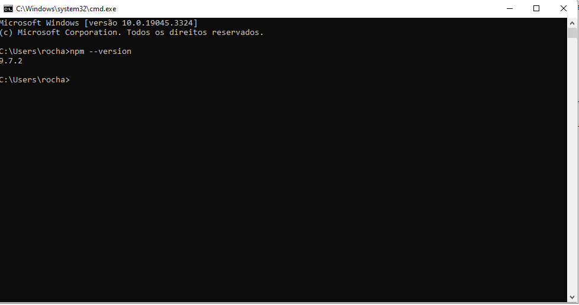
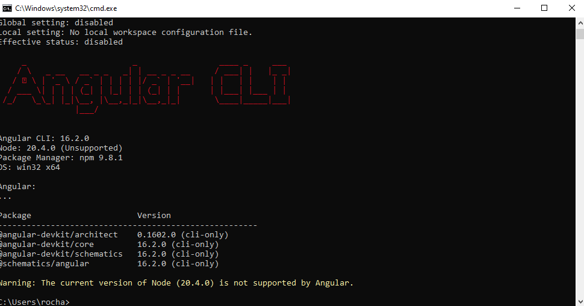
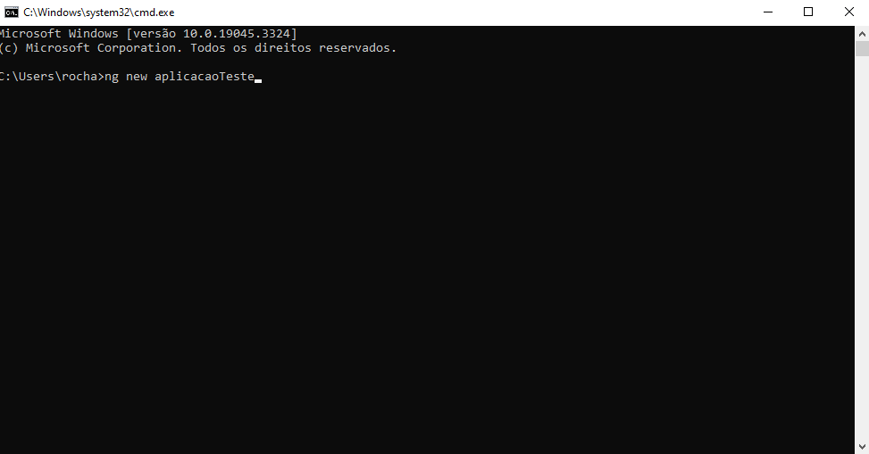
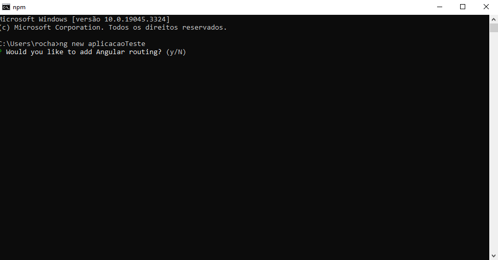
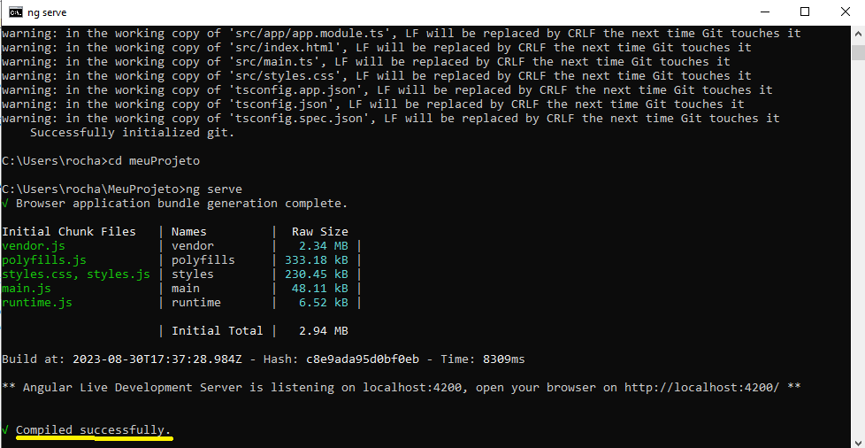

O angular é é um framework que utiliza o html para a criação de sites, ele foi desenvolvido pelos engenheiros da google tendo sua primeira vesão lançada em 2012. O angular utiliza a linguagem TypeScript,não confundir Angular com AngularJs já que ambos são completamente diferentes, o AngularJs utiliza javascript com html para ser utilizado já o Angular é uma versão nova e melhor trazendo diversas melhorias e trazendo todos os recursos que o javascript utiliza.
O objetivo do angular é trazer facilidade para desenvolvedores criarem seus apps de alta qualidade e com maior facilidade. O angular possui diversas versões que vão desde o AngularJs até Angular2 porém o nome Angular2 não ficou muito agradavel e decidiram manter apenas Angular, desde então foram lançadas outras versões como 4.0, 5.0, 6.0, 7.0, 8.0, 9.0, 10, 11, 12.
Para que possamos instalar o AngularCLI para facilitar o desenvolvimento de nossas aplicações web, devemos instalar o nodeJs.Deixarei o link abaixo
link:https://nodejs.org/en
Escolheremos a que está escrito Recommended for Most Users ou seja a versão recomendada pelo nodeJs para a maioria dos usuarios
após baixar instalar-mos o software iremos verificar se foi instalado com sucesso para isso abriremos o nosso prompt de comando ou terminal e escreveremos npm --version como na imagem abaixo:
 Verificada a versão iremos para o proximo passo que é instalando o nosso AngularCLI, iremos também utilizar o prompt de comando
para fazermos essa tarefa, iremos escrever
npm install -g @angular/cli como na imagem abaixo:

Não se preocupe com as diversas informações que aparecerem no seu terminal, elas são downloads das bibliotecas do angular quando terminar iremos escrever ng version no terminal para verificarmos se o angular foi instalado corretamente
Para criarmos nosso projeto em angular iremos abrir nosso terminal ou prompt de comando e digitaremos o comando ng new [nome do projeto] --prefix myapp como escrito na imagem abaixo:
Após criarmos o projeto ele irá perguntar se você quer criar uma pasta raiz para salvar o projeto, iremos digitar Y e após isso ele irá perguntar qual o tipo do arquivo para estilizar a página iremos utilizar, eu escolhi o css

Para executarmos nosso projeto criado em Angular iremos precisar primeiramente ir para o diretorio onde ele foi instalado, como não escolhemos o diretorio iremos apenas até a pasta do projeto escrevendo cd [nome do projeto] e após isso digitaremos ng serve para executarmos a nossa aplicação.


Para verificarmos que o projeto está rodando com sucesso aparecerá uma mensagem dizendo Compiled sucessfully como na imagem abaixo:
No fim desta atividade podemos entender os conceitos introdutorios sobre angular além de descrevermos como fazer para criar e executar um projeto do mesmo
voltar